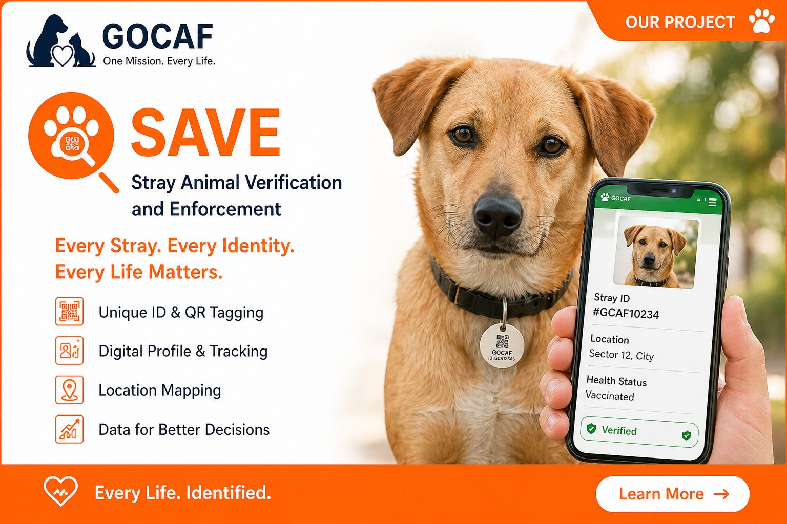
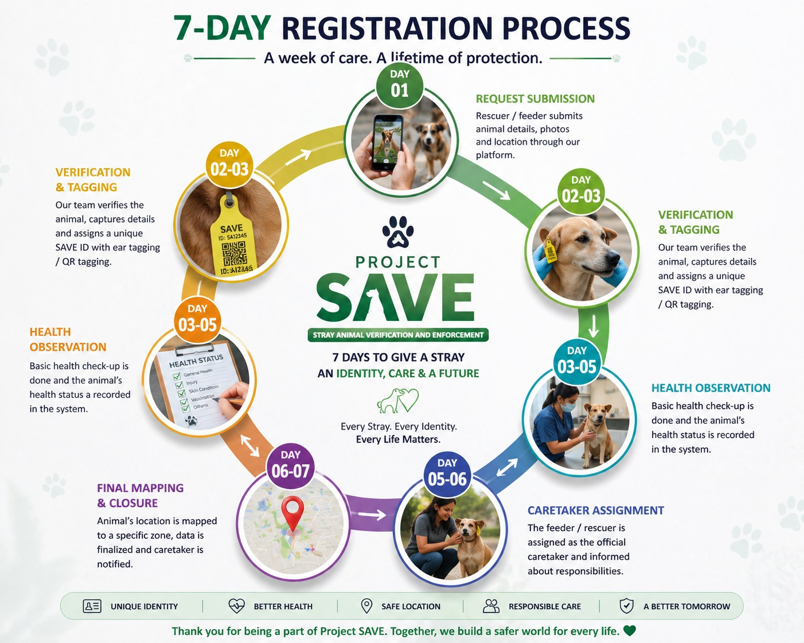

Project SAVE creates a digital identity and tracking system for stray and community animals — enabling faster rescue, better healthcare, and safer communities.

Project SAVE (Stray Animal Verification and Enforcement) is a technology-driven platform designed to ensure that no animal goes unidentified or unprotected. By assigning a unique digital identity to every animal, we enable:
To build a structured, humane, and data-driven ecosystem where every stray animal is:
Each registered animal receives a complete digital profile — a permanent, portable record that travels with them for life.
A complete identity package, accessible to caregivers, vets, and authorities anytime.
Five simple steps from first sighting to lifelong tracking.
Upload animal details, photos, and location through the GOCAF app or community helpline.
System assigns a unique SAVE ID and creates a digital profile for the animal.
Field team verifies the registration and tags the animal (ear tag / QR / microchip).
Initial condition is recorded and health is monitored on an ongoing basis.
Animal is mapped to a specific zone and continuously tracked across its territory.
A week of care. A lifetime of protection.

Rescuer / feeder submits animal details, photos and location through our platform.
Our team verifies the animal, captures details and assigns a unique SAVE ID with ear tagging / QR tagging.
Basic health check-up is done and the animal's health status is recorded in the system.
The feeder / rescuer is assigned as the official caretaker and informed about responsibilities.
Animal's location is mapped to a specific zone, data is finalized and caretaker is notified.
Thank you for being a part of Project SAVE. Together, we build a safer world for every life. 🐾
Our platform provides a live map view that powers faster decisions and targeted action across every ward and zone.
Everything you need to act fast and act smart — in one screen.
Project SAVE works as part of a complete welfare system — together, these create a sustainable and humane model.
We use modern technology to ensure efficiency and transparency at every level of operation.
Field teams record everything directly from a smartphone — instant, accurate, and synced to the cloud.
A scan reveals an animal's full history — vaccinations, location, caregiver, and health timeline.
Pinpoint animal territories, plot heatmaps, and route rescue teams efficiently.
Live data for partners, vets, and municipal bodies — transparency built in.
Every rescue, treatment, and intervention is logged and accessible for accountability.
Insights drive action — from ward-level planning to citywide policy decisions.
Concrete, measurable outcomes — for animals and for the communities they live in.
There are many ways to support SAVE. Choose what fits you.